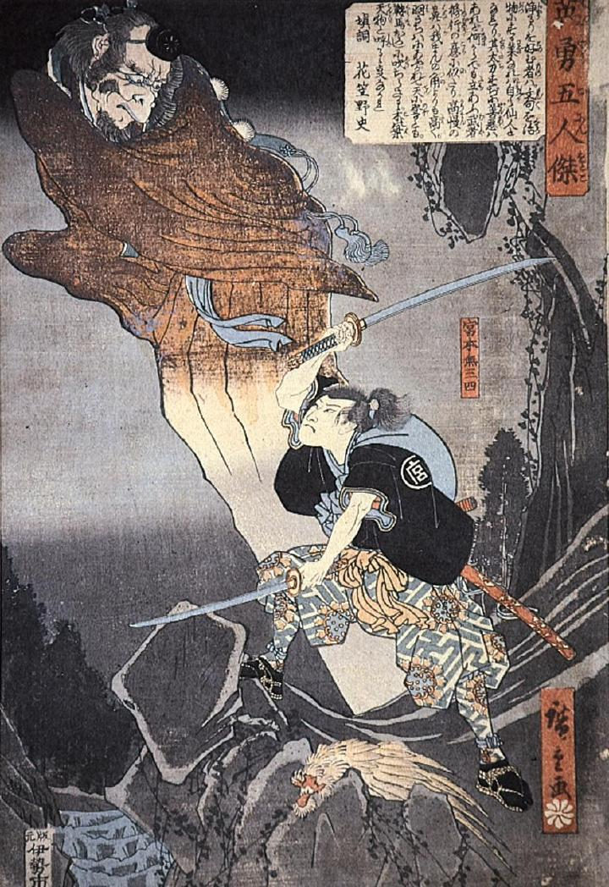

宮本無三四に斬りつけられ、飛び退く天狗。山伏の装束を身につけている。足が描かれていない。嘴のようなものがある。
著作者：歌川広重初代／出典：親書誌：A80_prague_0008：英勇五人傑 宮本無三四；エイユウゴニンオトコミヤモトムサシ／日付：2011／資源識別子：A80_prague_0008_0001_0000
Copyright (c)2010- International Research Center for Japanese Studies, Kyoto, Japan. All rights reserved.